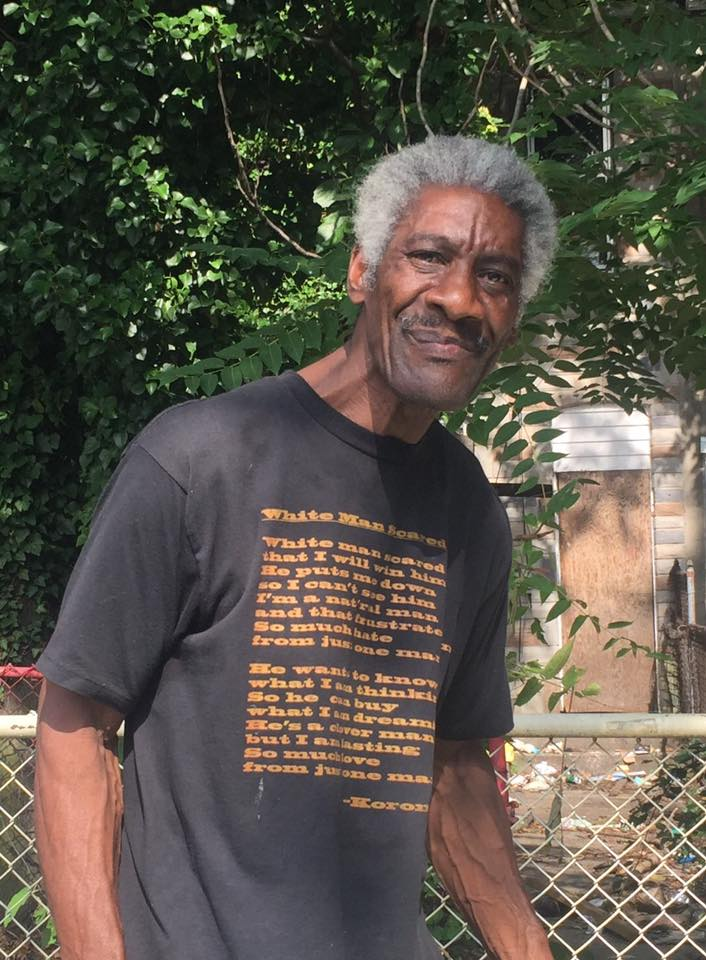

Harwood Community Association.
Harwood is a neighborhood of 700 families in North Central Baltimore. Within walking distance of stores, restaurants and cafes, it has fast transit to downtown and Towson, the Johns Hopkins supported Barclay Elementary and Middle school and the thriving 29th Street Community Center. Harwood is also a friendly place where people know their neighbors. Comments by residents include:
Here is a paragraph with Emphasized text and Important text. GDI